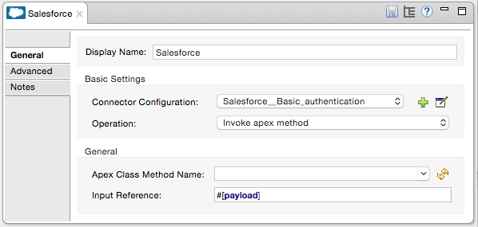

Salesforce Connector
Prerequisites
This document assumes that you are familiar with Mule, the Anypoint Studio interface, Global Elements, DataSense, and batch processing in Mule. Further, it assumes you are familiar with Salesforce and have a Salesforce developerforce account.
To use the Salesforce connector, you need:
-
Studio - An instance of Anypoint Studio. If you don’t use Anypoint Studio for development, follow the instructions to install Salesforce Maven dependencies in your
pom.xmlfile. -
Salesforce developer account - Sign up for one at Salesforce.
-
Security token - Sign into Salesforce, click your name in the upper right corner, then click Setup > My Personal Information > Reset Security Token. Then, click Reset My Security Token. Salesforce sends your security token via email to your registered email address.
-
Consumer key and Secret - If you are using the Salesforce connector to access an OAuth API, you also need a consumer key and secret. Refer to the detailed documentation on how to use the Salesforce connector to access an OAuth API.
To use a Salesforce Connector in your Mule application, be sure to include the namespace and schema location.
Schema Location
1
2
3
4
xsi:schemaLocation="
...
http://www.mulesoft.org/schema/mule/sfdc
http://www.mulesoft.org/schema/mule/sfdc/current/mule-sfdc.xsd"
For example:
1
2
3
4
5
6
7
8
9
10
11
<mule xmlns="http://www.mulesoft.org/schema/mule/core"
xmlns:xsi="http://www.w3.org/2001/XMLSchema-instance"
xmlns:sfdc="http://www.mulesoft.org/schema/mule/sfdc"
xsi:schemaLocation="
http://www.mulesoft.org/schema/mule/core
http://www.mulesoft.org/schema/mule/core/current/mule.xsd
http://www.mulesoft.org/schema/mule/sfdc
http://www.mulesoft.org/schema/mule/sfdc/current/mule-sfdc.xsd">
<!-- Insert your configuration elements and your flow here -->
</mule>
Installing and Configuring
You can install a connector in Anypoint Studio using the instructions in Installing a Connector from Anypoint Exchange.
Configuring Maven Dependencies
After you download and install the connector, use the following steps to make the Salesforce connector available to inside a Mule application for use and packaging.
-
Add the repository information to your project’s pom.xml file:
1 2 3 4 5 6 7 8 9 10 11 12 13 14
<repositories> <repository> <id>mule-ee-releases</id> <name>MuleSoft Repository</name> <url>https://repository-master.mulesoft.org/nexus/content/repositories/ci-releases/</url> <layout>default</layout> </repository> <repository> <id>mule-ee-snapshots</id> <name>MuleSoft Snapshot Repository</name> <url>https://repository-master.mulesoft.org/nexus/content/repositories/ci-snapshots/</url> <layout>default</layout> </repository> </repositories>
-
Add the module as a dependency to your project for Release:
1 2 3 4 5
<dependency> <groupId>org.mule.modules</groupId> <artifactId>mule-module-sfdc</artifactId> <version>RELEASE</version> </dependency>
Or for Latest:
1 2 3 4 5
<dependency> <groupId>org.mule.modules</groupId> <artifactId>mule-module-sfdc</artifactId> <version>LATEST</version> </dependency>
-
If you plan to use this module inside a Mule application, you need to add it to the packaging process. That way the final Zip file which contains your flows and Java code also contains this module and its dependencies. Add a special inclusion to the configuration of the Mule Maven plugin for this module as follows:
1 2 3 4 5 6 7 8 9 10 11 12 13 14
<plugin> <groupId>org.mule.tools</groupId> <artifactId>maven-mule-plugin</artifactId> <extensions>true</extensions> <configuration> <excludeMuleDependencies>false</excludeMuleDependencies> <inclusions> <inclusion> <groupId>org.mule.modules</groupId> <artifactId>mule-module-sfdc</artifactId> </inclusion> </inclusions> </configuration> </plugin>
Updating From an Older Version
If you’re currently using an older version of the connector, a small popup appears in the bottom right corner of Anypoint Studio with Updates Available:
-
Click the popup and check for available updates.
-
Click the Salesforce Connector version n.n.n check-box and click Next and follow the instructions provided by the user interface.
-
Restart Studio when prompted.
-
After restarting, when creating a flow and using the Salesforce Connector, if you have several versions of the connector installed, you may be asked which version you would like to use. Choose the version you would like to use.
We recommend that you keep Studio up to date with its latest version.
Configuring the Salesforce Connector
In version 6.2.0 and newer of this connector you can:
-
Invoke methods from Apex REST classes.
-
Use the OAuth 2.0 JWT Bearer and OAuth 2.0 SAML Bearer flows for Salesforce authentication.
For more information, see the Salesforce documentation.
To configure:
-
In Anypoint Studio, click File > New > Mule Project, name the project, and click OK.
-
In the search field, type http and drag the HTTP connector to the canvas.
-
Click the HTTP connector, click the green plus to the right of Connector Configuration, and in the next screen, click OK to accept the default settings.
-
Search for sales and drag the Salesforce connector to the canvas. If you have multiple versions of the connector, Studio prompts you for the version. Ensure that you choose version 6.2.0 or newer.
-
Click the Salesforce connector and click the green plus to the right of Connector Configuration. Choose one of these authentication types depending on your Salesforce implementation:
-
Basic authentication
-
OAuth 2.0 JWT Bearer
-
OAuth 2.0 SAML Bearer
-
OAuth v2.0
-
-
Complete the required Salesforce configuration information.
-
Required parameters for Basic authentication:
-
Username: Enter the Salesforce username.
-
Password: Enter the corresponding password.
-
-
Required parameters for the OAuth 2.0 JWT Bearer configuration:
-
Consumer Key - The consumer key for the Salesforce connected app.
-
Keystore File - See Generating a Keystore File.
-
Store Password - The password for the key store.
-
Principal - The Salesforce username that you want to use.
-
-
Creating a Consumer Key
To create a consumer key:
-
Login in to salesforce, and go to Setup > Build > Create > Apps.
-
Under the Connected App section, click New.
-
Follow these steps to created a new connected app:
-
Enter the following information in the appropriate fields:
-
A name for the connected app.
-
The API name.
-
Contact email.
-
-
Under API (Enable OAuth Settings), select Enable OAuth Settings.
-
Enter the Callback URL.
-
Select the Use digital signatures checkbox.
-
Click Browse and navigate to the Studio workspace that contains your Mule application.
-
Select salesforce-cert.crt, and then click Open.
-
Add the Full access (full) and Perform requests on your behalf at any time (refresh_token, offline_access) OAuth scopes to Selected OAuth Scopes .
-
Click Save, and then click Continue.
-
-
Configure the Authorization settings for the app:
-
Click Manage, and then click Edit.
-
Under the OAuth Policies section, expand the Permitted Users drop-down, and select Admin approved users are pre-authorized.
-
Click Save.
-
-
Under the Profiles section, click Manage Profiles.
-
Select your user profile, and then click Save.
-
Go back to the list of Connected Apps: Build>Create>Apps.
-
Under the Connected Apps section, select the connected app you create.
You can see the Consumer Key that you need to provide in your connector’s configuration.
Generating a Keystore File
The Keystore is the path to the keystore used to sign data during authentication. Only Java keystore format is allowed.
To generate a keystore file:
-
Go to your Mule workspace, and open the command prompt (for Windows) or Terminal (for Mac).
-
Type
keytool -genkeypair -alias salesforce-cert -keyalg RSA -keystore salesforce-cert.jksand press enter. -
Enter the following details:
-
Password for the key store.
-
Your first name and last name.
-
Your organization unit.
-
Name of your City, State, and the two letters code of your county.
The system generates a java keystore file containing a private/public key pair in your workspace.
-
-
Provide the file path for the Keystore in your connector configuration.
Type
keytool -exportcert -alias salesforce-cert -file salesforce-cert.crt -keystore salesforce-cert.jksand press enter. -
The system now exports the public key from keystore into the workspace. This is the public key that you need to enter in your Salesforce instance.
-
Make sure that you have both the key store (salesforce-cert.jks) and the public key (salesforce-cert.crt) files in your workspace.
Getting Additional Parameters
Required parameters for the OAuth 2.0 SAML Bearer configuration:
-
Consumer Key - The consumer key for the Salesforce connected app.
-
Keystore File - The path to the key store used to sign data during authentication. Only Java key store format is allowed.
Required parameters for the OAuth v2.0 configuration:

-
Consumer Key - The consumer key for the Salesforce connected app.
-
Consumer Secret - The consumer secret for the connector to access Salesforce.
Configuring Apex and Proxy Settings
All the Salesforce connectors configurations support Apex and Proxy settings. Configure them as follows:

-
Apex Settings values:
-
Fetch All Apex Soap Metadata - Fetches the metadata of all the Apex Soap classes
-
Fetch All Apex Rest Metadata -Fetches the metadata of all the all Apex Rest classes
-
Apex Class Name:
-
None - No Apex class name is mentioned for Datasense to acquire.
-
From Message - Lets you specify the class name from a MEL expression. Create Object manually - A user creates a list and adds class names to the list - only those classes and their methods are acquired by DataSense.
The Fetch All Apex Soap Metadata and Fetch All Rest Metadata check boxes take precedence over the Apex Class Name settings. If these boxes are selected, they fetch all the Apex SOAP metadata or APEX REST metadata irrespective of your selection in the Apex Class Names section.
-
-
-
Proxy Settings values:
-
Host - Host name of the proxy server.
-
Port - The port number on which the proxy server runs.
-
Username - The username to log in to the server.
-
Password - The corresponding password.
-
-
Click OK.
-
In the main Salesforce connector screen, click an Operation.

-
The Invoke apex REST method operation is new in version 6.2.0 of the Salesforce connector and works with the Apex Class Names settings. DataSense gets the names of the Apex classes and their methods that can be invoked using REST, which can be found in the drop-down for the Apex Class Method Name parameter. Choose a method and DataSense to get the input and output for that method.
-
The Invoke apex SOAP method operation is new in version 6.1.0 of the Salesforce connector and works with the Apex Class Names settings. DataSense gets the names of the Apex classes and their methods, which can be found in the drop-down for the Apex Class Method Name parameter. Choose a method and DataSense to get the input and output for that method. Input Reference is an XMLStreamReader - Create from XML representing the input of the method selected (similar to the input of a SOAP operation):
1 2 3 4
<soap:testSOAPMethod> <soap:name>John</soap:name> <soap:someNumber>54</soap:someNumber> </soap:testSOAPMethod>
Input Reference is set by default as
#[payload]and represents the input of the method selected previously, as you can imagine. If the Datasense is used, then DataMapper can be used to create the input from any other format (JSON, POJO etc.) The output of the invokeApexSoapMethod operation is similar to Input Reference.
Using the Salesforce Connector
Use the following topics after installing and configuring the Salesforce connector.
Date Format
To store Date fields just use a String with the following format: yyyy-mm-dd. Example: 2015-08-26.
Streaming
Using the Streaming API allows you to receive events for changes to Salesforce data that match a Salesforce Object Query Language (SOQL) query you define, in a secure and scalable way.
Events convert to Mule events and dispatch to your flows.
Publishing a Topic
Before you can start receiving events for changes in Salesforce, you must first create a PushTopic. A PushTopic is a special object in Salesforce that binds a name (the topic’s name) and SOQL together. Once a PushTopic is created you can then subscribe to it by using only its name.
There are several ways in which you can create a PushTopic, we cover using Salesforce itself and using this connector. You could potentially also use Workbench.
Pushing a Topic
To push a topic:
-
Click Your Name > System Log.
-
On the Logs tab, click Execute .
-
In the Enter Apex Code window, paste the following Apex code, and click Execute .
1 2 3 4 5
PushTopic pushTopic = new PushTopic(); pushTopic.Name = 'AccountUpdates'; pushtopic.Query = 'SELECT Id FROM Account'; pushTopic.ApiVersion = 26.0; insert pushTopic;
You can either use the create operation or the exclusive publish-topic operation as follows:
1
<sfdc:publish-topic name="AccountUpdates" query="SELECT Id FROM Account"/>
Subscribing to a Topic
After you create a topic, you can start receiving events by subscribing to the topic. The subscribe-topic acts like an inbound endpoint and it can be used as such.
1
2
3
4
5
6
<flow name="accountUpdatesSubscription">
<!-- INBOUND ENDPOINT -->
<sfdc:subscribe-topic topic="AccountUpdates"/>
<!-- REST OF YOUR FLOW -->
<logger level="INFO" message="Received an event for Salesforce Object ID #[map-payload:Id]"/>
</flow>
A Mule flow is divided in two. The first portion of it is usually an inbound endpoint (or an HTTP connector) and a message source. The Mule flow is an entity that receives and generates events that later are processed by the rest of the flow. The other portion is a collection of message processors that processes the messages (also known as events) that are received and generated by the inbound endpoint.
Every time our subscription to AccountUpdates receives an event it executes the rest of the flow. In the case of this example it prints a message to the log at INFO level.
Examining the Events
The event that gets pushed down the flows contains information about the Salesforce data that has changed, how it changes, and when. Usually the raw JSON that the subscription receives looks something like this:
1
2
3
4
5
6
7
8
9
10
11
"channel": "/topic/AccountUpdates",
"data": {
"event": {
"type": "created",
"createdDate": "2011-11-35T19:14:31.000+0000"
},
"sobject": {
"Id": "a05D0000002jKF1IAM"
}
}
}
This connector parses this information and send you information that a flow can actually work with.
Inbound Properties
Information that gets passed along as inbound properties:
| Property Name | Scope | Maps to |
|---|---|---|
channel |
INBOUND |
Channel JSON property |
type |
INBOUND |
Type JSON property in data |
createdDate |
INBOUND |
createdDate JSON property in data |
Except for channel, every property inside event are available as an INBOUND property.
Payload
The payload of the event is actually a Map, which contains everything inside the SObject object in the received JSON data. This is a map for the convenience of being able to use map-payload expression evaluator to extract the information of the SObject.
See how in the Subscribing to a topic example we used #[map-payload:Id] to print the ID of the SObject.
Bulk
The Salesforce Bulk API is based is optimized for loading or deleting large sets of data. It allows you to query, insert, update, upsert, or delete a large number of records asynchronously by submitting a number of batches which are processed in the background by Salesforce.
Our connector simplifies the model heavily making it very transparent and really easy. While the connectors works with concepts like Jobs and Batches, you will rarely see them except maybe in responses.
Creating/Updating/Upserting Objects in Bulk
Creating objects in bulk is as easy as creating objects without the bulk portion of it. Let’s do a quick recap as to how the regular create works:
1
2
3
4
5
6
7
8
9
10
11
12
<sfdc:create type="Account">
<sfdc:objects>
<sfdc:object>
<Name>MuleSoft</Name>
<BillingStreet>30 Maiden Lane</BillingStreet>
<BillingCity>San Francisco</BillingCity>
<BillingState>CA</BillingState>
<BillingPostalCode>94108</BillingPostalCode>
<BillingCountry>US</BillingCountry>
</sfdc:object>
</sfdc:objects>
</sfdc:create>
That Mule config extract creates an SObject of type Account with these properties. You can have as many objects as you want inside the objects collection. The output of this message processor is a list of SaveResult. A SaveResult is compound object between a status and an ID. The SaveResult indicates when an object successfully creates the object’s ID value.
The Bulk version of the create operation is named create-bulk and shares the exact same signature.
1
2
3
4
5
6
7
8
9
10
11
12
<sfdc:create-bulk type="Account">
<sfdc:objects>
<sfdc:object>
<Name>MuleSoft</Name>
<BillingStreet>30 Maiden Lane</BillingStreet>
<BillingCity>San Francisco</BillingCity>
<BillingState>CA</BillingState>
<BillingPostalCode>94108</BillingPostalCode>
<BillingCountry>US</BillingCountry>
</sfdc:object>
</sfdc:objects>
</sfdc:create-bulk>
There are no practical differences. Of course, since it is a Bulk operation (meaning that the actual creation process will be handled by Salesforce in the background) we don’t reply with a collection of SaveResults, because we do not have them yet. Instead we reply with a BatchInfo object with contains the id of the batch and the id of the job we just created to upload those objects.
This change in behavior remains true for all operations that support bulk.
Monitoring a Batch
You can monitor a Bulk API batch in Salesforce.
To track the status of bulk data load jobs and their associated batches, click Your Name > Setup > Monitoring > Bulk Data Load Jobs. Click on the Job ID to view the job detail page.
The job detail page includes a related list of all the batches for the job. The related list provides View Request and View Response links for each batch. If the batch is a CSV file, the links return the request or response in CSV format. If the batch is an XML file, the links return the request or response in XML format. These links are available for batches created in Salesforce API version 19.0 and later.
Understanding the Salesforce Connector
The Salesforce Connector functions within a Mule application as a secure opening through which you can access – and act upon – your organization’s information in Salesforce.
Using the connector, your application can perform several operations which Salesforce.com (SFDC) exposes via four of their APIs. When building an application that connects with Salesforce, for example, an application to upload new Contacts into an Account, you don’t have to go through the effort of custom-coding (and securing!) a connection. Rather, you can just drop a connector into your flow, configure a few connection details, then begin transferring data.
The real value of the Salesforce connector is in the way you use it at design-time in conjunction with other functionality available in Mule.
-
DataSense: When enabled, DataSense extracts metadata for Salesforce standard objects (sObjects) to automatically determine the data type and format that your application must deliver to, or can expect from, Salesforce. By enabling this functionality (in the Global Salesforce Connector element), Mule does the heavy lifting of discovering the type of data you must send to, or be prepared to receive from Salesforce.
-
DataMapper transformer: When used in conjunction with a DataSense-enabled Salesforce Connector, DataMapper can automatically extract sObject metadata that you can use to visually map and/or transform to a different data format or structure. For example, if you configure a Salesforce Connector in your application, then drop a DataMapper after it, DataMapper uses the information that DataSense extracted to pre-populate the input values for mapping. That way, you only need to confirm (or adjust) the selections, then proceed to mapping to your desired output. In other words, DataSense makes sure that DataMapper knows the data format and structure with which it must work so you don’t have to figure it out manually.
-
Poll Scope and Watermark: To regularly pull data from Salesforce into your application, use a poll-wrapped Salesforce connector in place of an inbound endpoint in your flow. Use the Watermark functionality of the Poll Scope to make sure you’re only pulling, then processing, new information from Salesforce.
-
Batch Processing: A batch job is a block of code that splits messages into individual records, performs actions upon each record, then reports on the results and potentially pushes the processed output to other systems or queues. This functionality is particularly useful when working with streaming input or when engineering "near real-time" data integration with SaaS providers such as Salesforce.
Salesforce Connector Functionality
Salesforce recognizes five integration patterns for connecting with other systems. As the "window" through which you can access or act upon data in Salesforce from within your application, Mule’s Salesforce Connector addresses these patterns, as the table below illustrates.
| Integration Pattern | Description | Supported by MuleSoft’s Salesforce Connector |
|---|---|---|
|
Remote Process Invocation: Request-Reply |
Salesforce kicks off a process in a remote system, waits for the remote system to finish processing, then accepts control back again from the remote system. |
✔ |
|
Remote Process Invocation: Fire and Forget |
Salesforce initiates a process in a third-party system and receives an acknowledgement that the process has started. The third-party system continues processing independent of Salesforce. |
✔ |
|
Batch Data Synchronization |
An external system accesses, changes, deletes, or adds data in Salesforce in batches, and vice versa (Salesforce to external system). |
✔ |
|
Remote Call-In |
An external system accesses, changes, deletes or adds data in Salesforce, and vice versa (Salesforce to external system). |
✔ |
|
User Interface Update Based on Data Changes |
The Salesforce UI updates in response to a change in a third-party system. |
✔ |
Salesforce exposes operations that address these integration patterns via several APIs. Note that the Salesforce Connector does not expose all possible operations of these Salesforce APIs. Though it makes little difference to how you use the connector in your application, it’s useful to know that Mule’s Salesforce Connector performs many of the operations that Salesforce exposes via the following six APIs:
-
SOAP API – This API offers you secure access to your organization’s information on Salesforce via SOAP calls. Most of the operations that MuleSoft’s Salesforce Connector performs map to operations this API exposes.
-
Bulk API – This API offers the ability to quickly and securely load batches of your organization’s data into Salesforce.
-
Streaming API – This API enables you to securely receive notifications for changes to your organization’s information in Salesforce.
-
REST API– This API offers you secure access to your organization’s information on Salesforce via REST calls.
-
Metadata API- This API enables you to manage customizations and to build tools that can manage the metadata model, not the data itself.
-
Apex SOAP API- This API enables you to expose Apex class methods as custom SOAP Web service calls. This allows an external application to invoke an Apex Web service to perform an action in Salesforce.
-
Apex REST API- This API enables you to create your own REST-based web services using Apex. It has all of the advantages of the REST architecture, and provides the ability to define custom logic and includes automatic argument/object mapping.
For reference, the Salesforce Connector does not perform operations exposed by the following Salesforce APIs:
-
Chatter REST API
-
Tooling API
|
Learn more about Salesforce’s APIs and when it is appropriate to use each. |
The sections below offer information about how to use the Salesforce Connector in your application. Beyond these basics, you can access documentation that describes how to secure your connection to Salesforce (via basic authentication or OAuth authentication), or access full reference documentation for the connector.
Using the Salesforce Connector
Generally speaking, there are basically three different ways to use a Salesforce Connector in your application: as an outbound connector, an inbound connector, or a streaming inbound connector. A description of these three uses follows.
| Certainly, you can configure the connector in your application using XML, but Studio’s visual editor offers several design-time usability advantages (Best Practices for Using a Salesforce Connector in Studio). The steps and information that follow pertain largely to the use of a Salesforce Connector in Studio’s visual editor. |
-
Outbound Connector: Use as an outbound connector in your flow to push data into Salesforce. To use the connector in this capacity, simply place the connector in your flow at any point after an inbound endpoint (see image below, top). Note that you can also use a Salesforce Connector in a batch process to push data to Salesforce in batches (see image below, bottom).
-
Inbound Connector: Use the connector in conjunction with a Poll Scope to behave like an inbound connector in a flow to pull data from Salesforce into your application. To use the connector in this capacity, you must first place a poll scope element at the beginning of your flow, then place a Salesforce Connector within the poll scope (see image below, top). Note that you can also use a poll-wrapped Salesforce Connector at the beginning of a batch process to extract data from Salesforce, then batch process the content in Mule (see image below, bottom).


-
Streaming Inbound Connector: Use the connector on its own as the inbound connector of your flow, streaming data from Salesforce into your application. To use the connector in this capacity, place a Salesforce Connector at the very beginning of your flow; Studio automatically converts the connector to Salesforce (Streaming). Technically, this is still the same connector, but it accesses Salesforce’s Streaming API which, consequently, means that the only operation the converted connector can perform is
Subscribe to topic(that is, subscribe to PushTopic).
Best Practices for Using a Salesforce Connector in Studio
To take full advantage of the functionality DataSense and the Salesforce Connector have to offer, design-time best practice dictates that you should build an application in a particular order:
CONFIGURE the connector -→ TEST the connection -→ INITIATE DataSense metadata extraction -→
BUILD the rest of your flow -→ ADD and configure DataMappers
The objective of this design-time strategy is to set the pieces of the integration puzzle in place, then "glue them together" with DataMappers. Rather than designing a flow sequentially, from the inbound endpoint, this type of "align, then glue together" strategy ensures that you are utilizing DataSense, wherever possible, to pre-populate the information about the structure and format of the input or output data into a DataMapper. The diagram in the section below prescribes a process that follows this best practice in the context of a flow that uses a Salesforce Connector. Get further details by reading about DataSense Best Practices.
Note: When subscribing to a topic that does not exist in Salesforce, the subscription is successful. When the topic creates, the user that is already subscribed to it does NOT receive notification regarding that topic. The user has to resubscribe after the topic creates.
Adding a Salesforce Connector to a Flow
The way you use a Salesforce Connector in your application depends upon two to three key choices you make about the function you need it to perform:
-
Are you pushing data into Salesforce or pulling data out of Salesforce?
-
If pulling data from Salesforce, are you simply going to subscribe to a topic in Salesforce, or regularly poll Salesforce for information?
-
Will you secure your connection to Salesforce using basic authentication or OAuth?
The workflow diagram below outlines the steps to take, and the decision to make, to add a Salesforce Connector to your application.

-
(a) Though you can place a connector at any point in your flow, be aware that you may need to transform and the data structure and format to smoothly transfer date to, or accept data from another resource.
-
(b) The Salesforce (Streaming) Connector can only perform one operation against your organization’s data in Salesforce:
Subscribe to topic. -
(c) Learn more about using the Poll Scope to regularly poll Salesforce for new data for your application to process.
Depending upon its function in your application (streaming data, polling for data, pushing data, etc.), the operation you select, and the sObject you are acting upon, Studio makes different Salesforce Connector fields available for configuration. The objectives of this document do not include the exhaustive exploration of all combinations of operations and objects in an application. However, you can access full reference documentation to learn about how to configure the connector for all operations.
Tips
-
Upsert: Unless you configure the External ID Field Name for the sObject to which you’re trying to upsert, every use of the upsert will fail.

-
Upsert: The upsert operation does not work with the sObject
priceBookentry2. -
Inserting into Drop-Down: Be aware, inserting dependent values into an existing drop-down list field in Salesforce doesn’t always work. Test to confirm functionality.
-
Evaluating Values in Drop-Down: If you’re evaluating against a value in an existing drop-down list field in Salesforce, be sure to use the exact value in the drop-down. For example, if you use the value "US" to evaluate against the contents of a drop-down list which contains the value "USA", the evaluation will work, but you end up with two values in the drop-down: one for US and one for USA.
-
Currency: Currency values cannot be over 18 characters in length.
-
Currency: When working with multiple currencies, be aware of which currency your sObject uses, to avoid inaccurate entries. The default currency matches the location at the organization level.
-
Limits on API Calls: Check the limit on the number of API calls to which you’re entitled. Ensure that your app does not exceed the number of allotted calls per day.
-
Opportunity sObject: When extracting data from an Opportunity, be aware that a "quarter" is not relative to a calendar year; a "quarter" in this context is relative to the financial year of the organization.
-
With DataMapper: If you have used DataSense to pre-populate the mapping input or output values in a DataMapper in your flow, be aware that DataMapper only displays the top-level of hierarchical Salesforce Standard Objects (sObjects). In other words, if you have a parent object with many nested children, DataMapper only displays the parent.
-
With DataMapper: If you have used DataSense to pre-populate the mapping input or output values in a DataMapper in your flow, be aware that DataMapper doesn’t recognize the payload type if the operation is Delete.
Example Use Case
The following example invokes an Apex method. Salesforce has a custom object called CustomOrder_c, which has two custom fields ProductName_c and ProductValue_c. An Apex class is deployed in Salesforce using the Deploy metadata operation.
1
2
3
4
5
6
7
8
9
10
11
12
13
14
15
16
17
18
19
20
21
22
23
24
25
global class CustomOrderUtils {
webService static void createOrder(String productOrdered, String orderValue) {
CustomOrder__c order = new CustomOrder__c();
order.ProductName__c = productOrdered;
order.ProductValue__c = orderValue;
insert order;
}
webService static List<CustomOrder__c> listAllCustomOrders() {
List<CustomOrder__c> allCustomOrders = [SELECT ProductName__c , ProductValue__c FROM CustomOrder__c];
return allCustomOrders;
}
webService static List<CustomOrder__c> listAllCustomOrdersThatContainProduct(String productName) {
List<CustomOrder__c> allCustomOrders = [SELECT ProductName__c , ProductValue__c FROM CustomOrder__c];
List<CustomOrder__c> someCustomOrders = new List<CustomOrder__c>();
for(CustomOrder__c customer : allCustomOrders)
{
if(customer.ProductName__c.contains(productName))
{
someCustomOrders.add(customer);
}
}
return someCustomOrders;
}
}
To configure:
-
In Anypoint Studio, click File > New > Mule Project, name the project, and click OK.
-
In the search field, type http and drag the HTTP connector to the canvas.
-
Click the HTTP connector, click the green plus to the right of Connector Configuration, and in the next screen, click OK to accept the default settings.
-
Search for sales and drag the Salesforce connector to the canvas. Configure as before.
-
Click the Invoke apex SOAP method operation. Datasense brings all the available Apex methods (for the classes set under Apex Class Names in the connector configuration, or all the Apex classes if None is selected for this parameter).
-
Select a method that DataSense has brought in the drop-down for Apex Class Method Name. Let us say we choose Customorderutils - Createorder. After choosing a method, DataSense brings the input and output format for that specific method.
-
Add a DataMapper in front and after the connector. If Payload - Unknown is listed in the DataMapper then the method either has no input or it returns nothing. If DataMapper detects any input for the method, it looks something like:

-
Add as input to the DataMapper this JSON:
1 2 3 4
{ "orderValue" : "50000", "productOrdered" : "car" }The mapping looks like:
The flows appear as:
-
After you create the flows, right-click the project name in Package Explorer and click Run As > Mule Application.
-
Post the JSON as a sample for DataMapper in the HTTP connector’s URL. A new instance of the Custom Order should be created in Salesforce.
Code Example
1
2
3
4
5
6
7
8
9
10
11
12
13
14
15
16
17
18
19
20
21
22
23
24
25
26
27
28
29
30
31
<mule xmlns:data-mapper="http://www.mulesoft.org/schema/mule/ee/data-mapper" xmlns:http="http://www.mulesoft.org/schema/mule/http" xmlns:sfdc="http://www.mulesoft.org/schema/mule/sfdc" xmlns="http://www.mulesoft.org/schema/mule/core" xmlns:doc="http://www.mulesoft.org/schema/mule/documentation"
xmlns:spring="http://www.springframework.org/schema/beans" version="EE-3.6.1"
xmlns:xsi="http://www.w3.org/2001/XMLSchema-instance"
xsi:schemaLocation="http://www.springframework.org/schema/beans http://www.springframework.org/schema/beans/spring-beans-current.xsd
http://www.mulesoft.org/schema/mule/core http://www.mulesoft.org/schema/mule/core/current/mule.xsd
http://www.mulesoft.org/schema/mule/http http://www.mulesoft.org/schema/mule/http/current/mule-http.xsd
http://www.mulesoft.org/schema/mule/sfdc http://www.mulesoft.org/schema/mule/sfdc/current/mule-sfdc.xsd
http://www.mulesoft.org/schema/mule/ee/data-mapper http://www.mulesoft.org/schema/mule/ee/data-mapper/current/mule-data-mapper.xsd">
<http:listener-config name="HTTP_Listener_Configuration" host="0.0.0.0" port="8081" doc:name="HTTP Listener Configuration"/>
<data-mapper:config name="JSON_To_Xml_createOrder_" transformationGraphPath="json_to_xml_createorder_.grf" doc:name="JSON_To_Xml_createOrder_"/>
<data-mapper:config name="Xml_listAllCustomOrdersResponse__To_JSON" transformationGraphPath="xml_listallcustomordersresponse__to_json.grf" doc:name="Xml_listAllCustomOrdersResponse__To_JSON"/>
<data-mapper:config name="JSON_To_Xml_listAllCustomOrdersThatContainProduct_" transformationGraphPath="json_to_xml_listallcustomordersthatcontainproduct_.grf" doc:name="JSON_To_Xml_listAllCustomOrdersThatContainProduct_"/>
<data-mapper:config name="Xml_listAllCustomOrdersThatContainProductResponse__To_JSON" transformationGraphPath="xml_listallcustomordersthatcontainproductresponse__to_json.grf" doc:name="Xml_listAllCustomOrdersThatContainProductResponse__To_JSON"/>
<flow name="invoke_custom_object_utilsFlow">
<http:listener config-ref="HTTP_Listener_Configuration" path="/createOrder" doc:name="HTTP"/>
<data-mapper:transform config-ref="JSON_To_Xml_createOrder_" doc:name="JSON To Xml<createOrder>"/>
<sfdc:invoke-apex-soap-method config-ref="Salesforce__Basic_authentication" soapMethodName="CustomOrderUtils#createOrder" doc:name="Salesforce"/>
<set-payload value="'Successfully created Order!'" doc:name="Set Payload"/>
</flow>
<flow name="invoke_custom_object_utilsFlow1">
<http:listener config-ref="HTTP_Listener_Configuration" path="/listAllOrders" doc:name="HTTP"/>
<sfdc:invoke-apex-soap-method config-ref="Salesforce__Basic_authentication" soapMethodName="CustomOrderUtils#listAllCustomOrders" doc:name="Salesforce"/>
<data-mapper:transform config-ref="Xml_listAllCustomOrdersResponse__To_JSON" doc:name="Xml<listAllCustomOrdersResponse> To JSON"/>
</flow>
<flow name="invoke_custom_object_utilsFlow2">
<http:listener config-ref="HTTP_Listener_Configuration" path="/listSomeOrders" doc:name="HTTP"/>
<data-mapper:transform config-ref="JSON_To_Xml_listAllCustomOrdersThatContainProduct_" doc:name="JSON To Xml<listAllCustomOrdersThatContainProduct>"/>
<sfdc:invoke-apex-soap-method config-ref="Salesforce__Basic_authentication" soapMethodName="CustomOrderUtils#listAllCustomOrdersThatContainProduct" doc:name="Salesforce"/>
<data-mapper:transform config-ref="Xml_listAllCustomOrdersThatContainProductResponse__To_JSON" doc:name="Xml<listAllCustomOrdersThatContainProductResponse> To JSON"/>
</flow>
</mule>
See Also
-
Access full reference documentation for the Salesforce connector.
-
Read more about Anypoint Connectors.
-
Read more about Batch Processing in Mule.
-
Read more about the Poll Scope.
-
Access the Salesforce developer documentation for detailed documentation on Salesforce objects and queries.